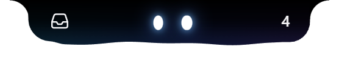
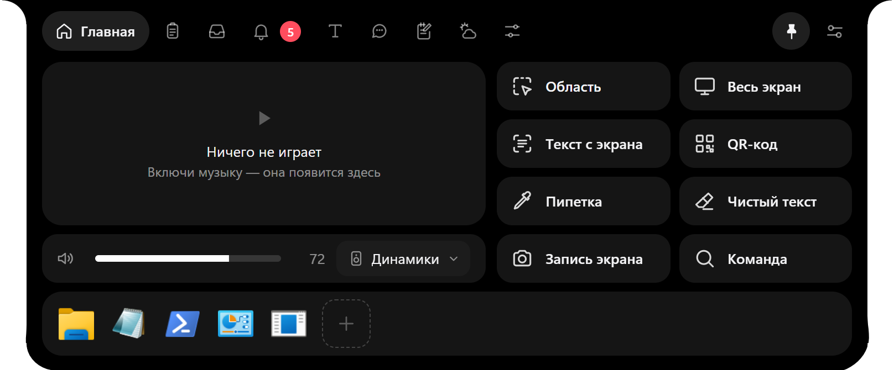
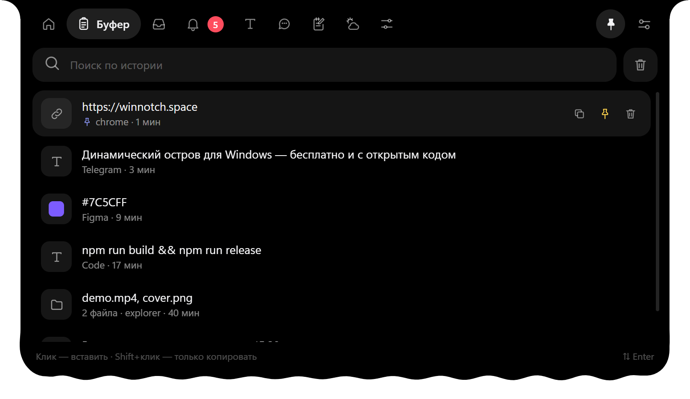
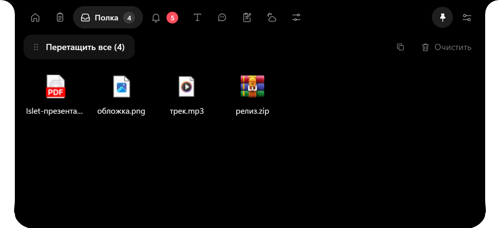
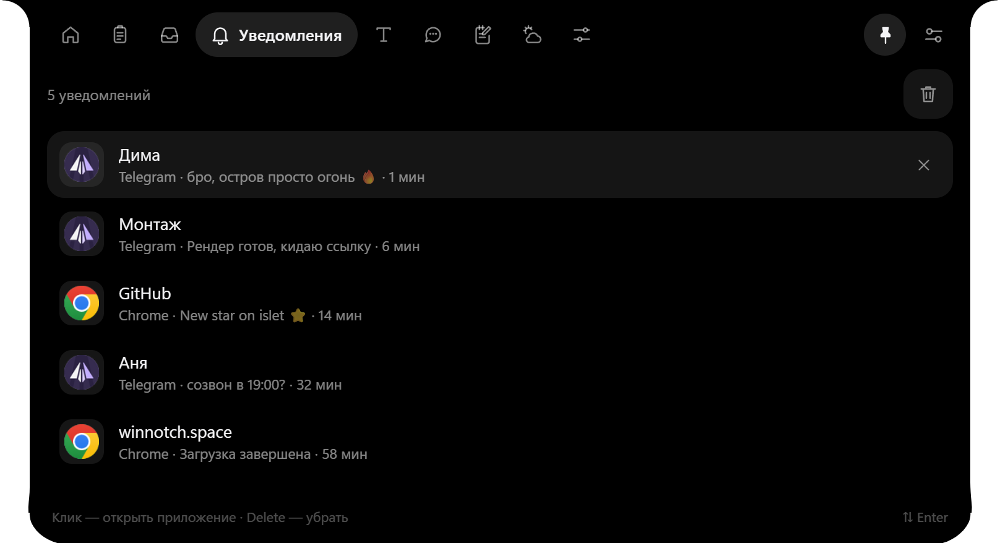
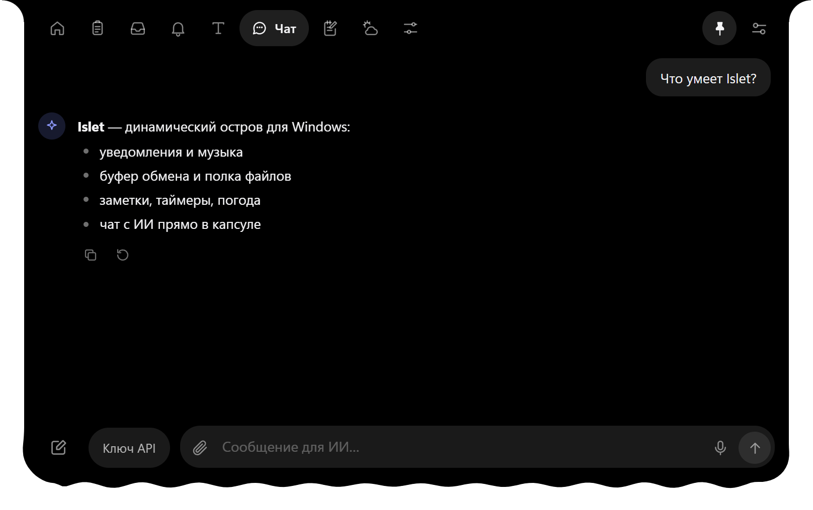
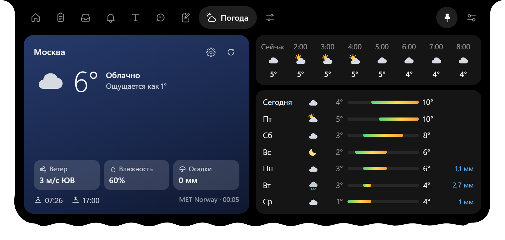
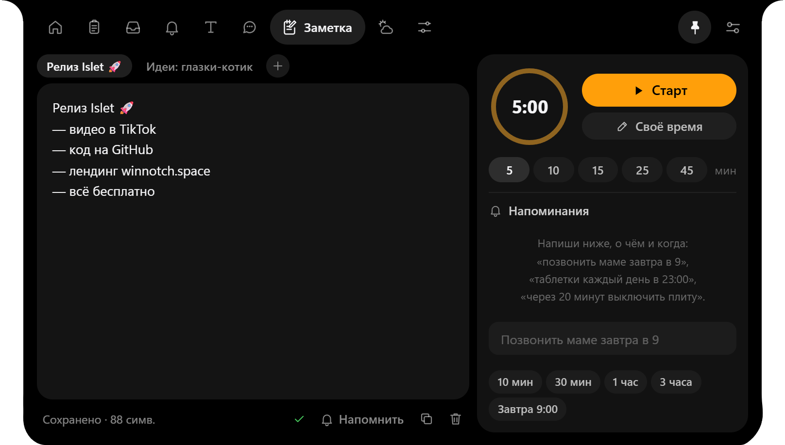
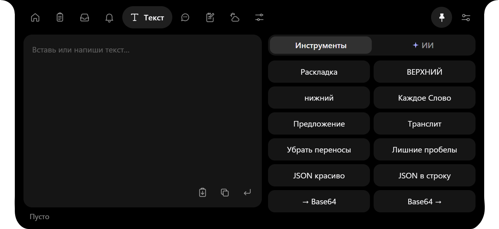
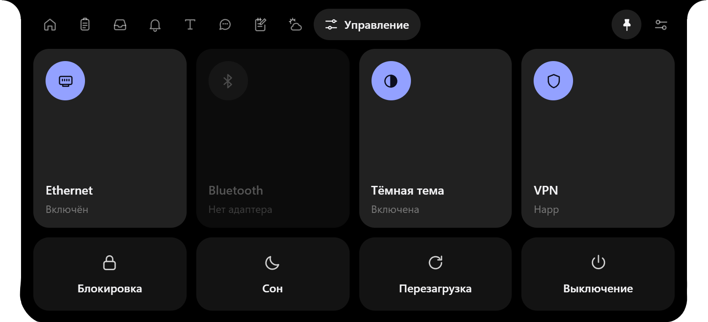

Всё лучшее.
В одном острове.
Маленькая капсула наверху экрана. Наведи мышку, и в ней музыка, файлы, уведомления и чат с ИИ. Убрал мышку, и она снова не мешает.
Islet для Windows. Открой эту страницу на компьютере и скачай там.

Смотри, как это работает.
Листай вниз. Мы покажем на обычном рабочем столе, без сложных слов.





Включил музыку
Наведи мышку наверх экрана. Обложка, громкость и кнопки уже тут, плеер открывать не надо.
Скопировал адрес
Всё, что ты копируешь, остаётся в истории. Вернись к этому хоть через неделю.
Нужен файл под рукой
Перетащи его на остров. Он подождёт на полке, пока не понадобится.
Пришло сообщение
Прочитай наверху и работай дальше. Клик откроет нужное приложение.
Качается файл
Процент и размер видно сразу, в браузер заглядывать незачем.
Возник вопрос
Спроси ИИ прямо в капсуле, не открывая браузер.
Закончил
Убери мышку, и остров снова станет маленькой капсулой.
И это ещё не всё.

Погода
Прогноз на сегодня и ближайшие дни.

Заметки
Быстрые записи и таймеры всегда под рукой.

Текст
Набрал ghbdtn вместо привет? Исправит в один клик.

Управление
Сеть, Bluetooth, тема, блокировка, сон и питание.
Остров смотрит на тебя.
В покое капсула живая: глазки моргают и следят за курсором. Выбери характер.
Компьютер его почти не замечает.
Каждая ячейка это один поток процессора, закрашено столько, сколько заняла Islet. Один замер на одном компьютере: Windows 11, 16 потоков, 10 секунд в фоне. На другом железе цифры будут другими.
Я соединил всё самое лучшее и выкладываю это для всех абсолютно бесплатно.
Без подписок, без пробного периода, без рекламы. Весь код открыт.
Поставь остров за минуту.
Islet для Windows. Открой эту страницу на компьютере и скачай там.
- СкачайНажми кнопку выше.
- ЗапустиWindows может предупредить о неизвестном издателе. Нажми Подробнее, потом Выполнить в любом случае.
- ГотовоОстров появится сверху экрана и будет запускаться вместе с Windows.
Это правда бесплатно?
Да. Без подписок, пробного периода и рекламы. Код открыт под лицензией MIT.
Где хранятся ключи для ИИ?
Ключи вводятся в настройках и лежат только у тебя, в папке %APPDATA%\Islet. В установщике и в репозитории ключей нет.
Покажет ли загрузку из моего браузера?
Да, из любого. Chrome, Edge, Яндекс Браузер, Brave, Vivaldi, Opera, Firefox и Zen дают процент. Если сервер не сообщает размер файла, будут видны размер и скорость.
Не будет мешать в играх?
Остров прячется, когда игра или видео идут на весь экран, и возвращается после.
Как удалить?
Параметры → Приложения → Установленные приложения → Islet → Удалить.
Как собрать самому?
Нужен Node.js 20 или новее.
git clone https://github.com/PlaybackG/isletcd islet/isletnpm installnpx electron .